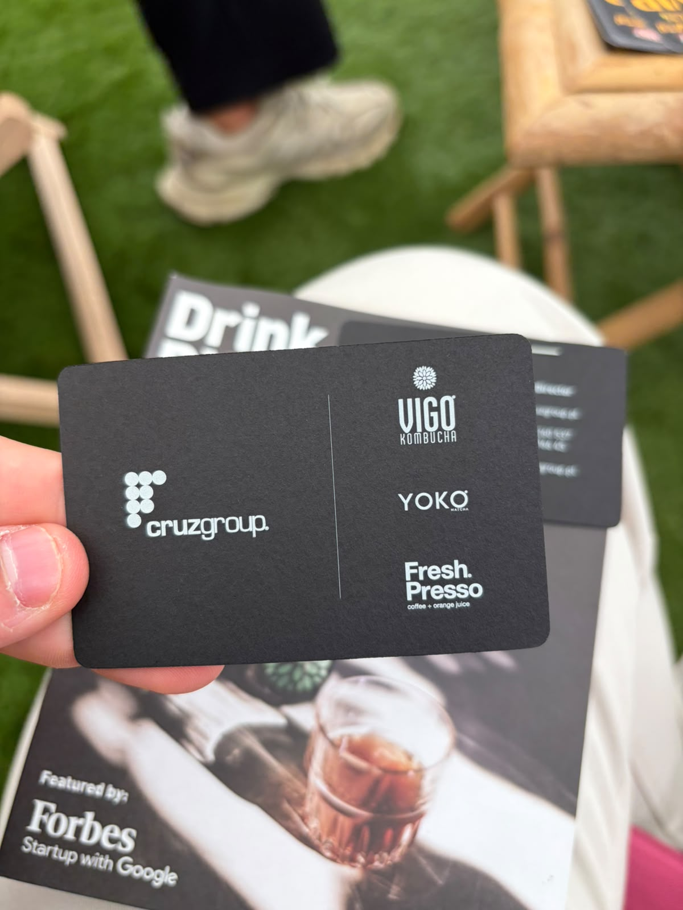
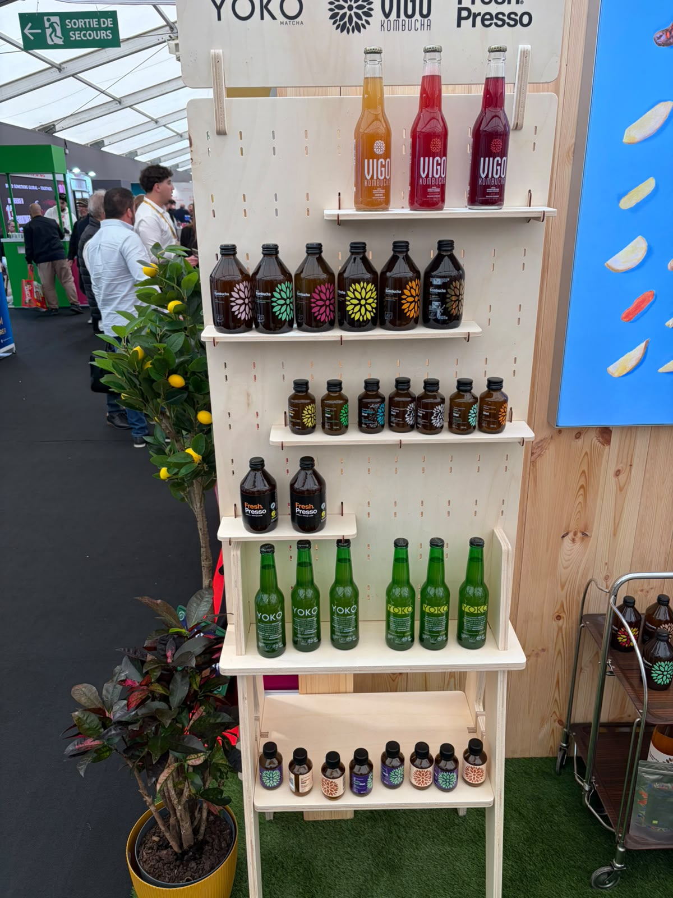
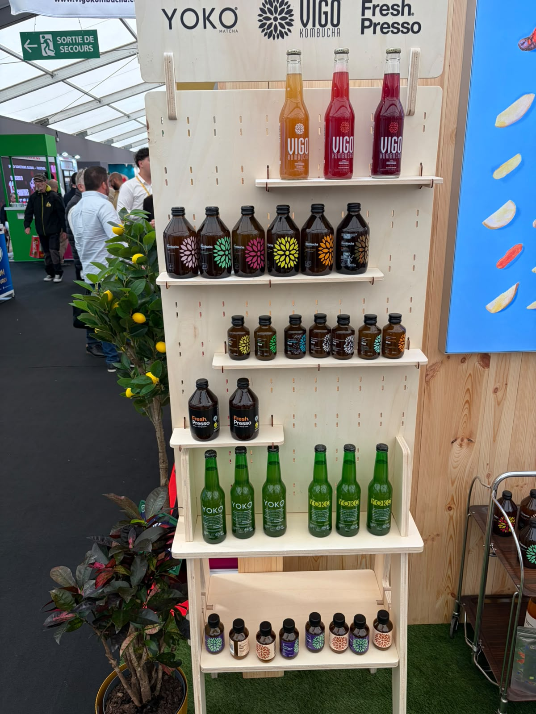
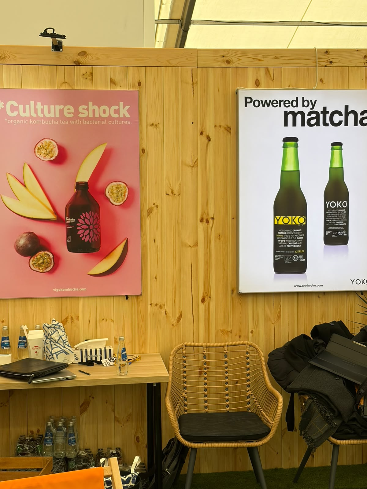
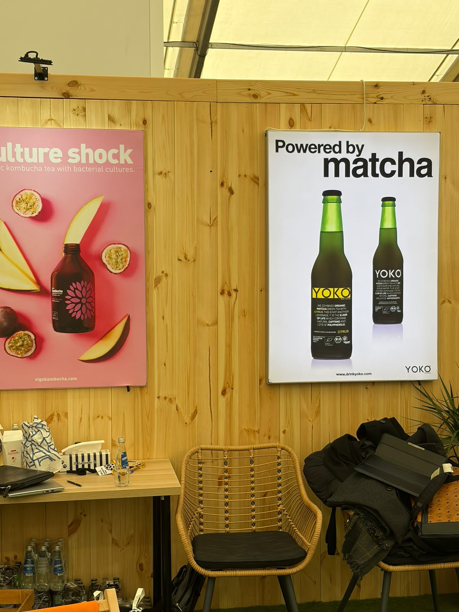

Cruz Group / VIGO / YOKO / Fresh Presso
مشروبات وكومبوتشا
الوكيل الحصري في السعودية
لم يُعثر في البحث العام على دليل موثوق يثبت وجود وكيل حصري لهذه الشركة في السعودية أو ينفيه. لا تُعدّ السوق متاحة حصريًا قبل رد الشركة.
- الجهة
- لم تُثبت جهة سعودية محددة
- نطاق الدليل
- Cruz Group / VIGO / YOKO / Fresh Presso
- تاريخ البحث
- 21 أكتوبر 2026
الخطوة التالية: طلب تأكيد مكتوب باسم الوكيل، ونطاق السعودية، والعلامات والأصناف وقنوات البيع، وسريان الحصرية.
النتائج العامة محدودة، وتعذر استخراج محتوى كافٍ من الموقع المرجعي؛ النتيجة غير محسومة وتحتاج رد الشركة.
المصادر وطريقة التحقق
- الموقع المرجعي للشركة / صفحة التواصل
مرجع للاستفسار المباشر؛ ليس شهادة بعدم وجود وكيل.
بحث باسم الشركة والعلامات مع السعودية والتوزيع والوكالة، ومراجعة المصادر العامة المتاحة. لم يتم التواصل مع الشركة أو الاطلاع على عقد وكالة.
المنتجات والمجال
- VIGO Kombucha بزجاجات ونكهات متعددة
- YOKO مشروبات يظهر بجوارها وصف Powered by matcha
- Fresh Presso: العلامة ظاهرة على بطاقة المجموعة ورف العرض؛ التفاصيل تحتاج كتالوجًا
بطاقة الملف
الجناح
غير ظاهر في الصور
العنوان
غير موضح
حالة المتابعة
بيانات مجمعة — لم يبدأ التواصل من هذا الملف
وسائل التواصل
Alexander Psztur
Export Director
بطاقة الأعمال المصورة
مكتب الشركة
مكتب الشركة
https://cruzgroup.pl/kontakt/
ملاحظات الملف
الأرقام من بطاقة الأعمال كما طُبعت؛ لا يُفترض أن جميعها أرقام واتساب.
أوصاف المنتجات والفوائد الواردة على العبوات منسوبة للمصنع، وليست تقييمًا طبيًا أو اعتمادًا للتوريد.
الصور وبطاقات الأعمال
اضغط على الصورة لفتح الأصل بالحجم الكامل.










